Schedule Counter (Sheets) — Setup Guide
This gets the full Schedule Counter running for your store: staffing by the hour against your real sales, a weekly forecast that learns your sales pattern, and reminders that keep it fed. You don't need to know anything about code. Plan on about 30 minutes, on a computer (not a phone).
Just want to check one schedule without any setup? Use the no-setup version instead.
Before you start
Have these ready:
- A Google account for your store, not your personal one. Your sales history is saved in that account's Google Drive, and reminder emails go out from it.
- CFA Home access to Analytics Hub (ThoughtSpot). Step 7 sets up a weekly sales sync from there.
- Your restaurant number, for the ThoughtSpot store filter
- HotSchedules access to export your weekly schedule
- The email address that should get alerts if a weekly job fails
Step 1: Make your own copy
- Click this link: Make my copy of Schedule Counter. If Google asks you to sign in first, use your store account.
- Google shows a Copy document screen. The yellow note says the attached script will be copied too. That's the tool itself, and it's supposed to come along.
- Click the blue Make a copy button.
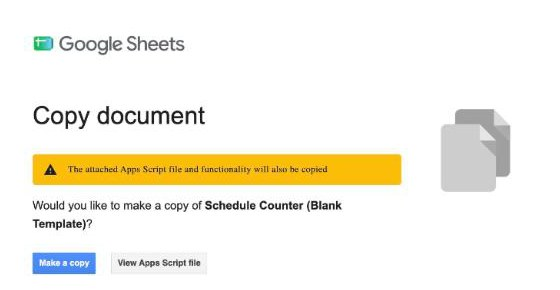
Your copy opens, named "Copy of Schedule Counter (Blank Template)". Rename it to something you'll recognize in Step 7, like "Main Street Schedule Counter". It's blank and belongs only to you.
Step 2: Start the setup
- Wait about 10 seconds for the sheet to finish loading.
- In the menu bar at the top (File, Edit, View…), click 📊 Schedule Counter Setup, then Start Setup.
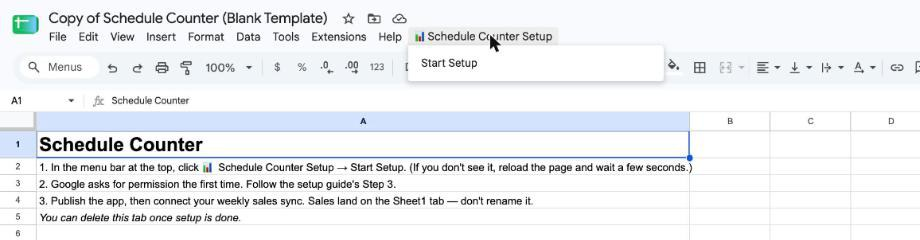
Don't see 📊 Schedule Counter Setup? Reload the page and wait a little longer. If it still isn't there after two reloads, make a new copy from the Step 1 link. Once in a while Google makes a copy without the tool attached.
Step 3: Give the tool permission (one time only)
Google asks you to approve the tool before it can build tabs and send reminder emails. This is normal, and you only do it once. The sign-in screens open in a new tab.
"Authorization required." Click OK. If Google asks which account to use, pick your store account.
"Google hasn't verified this app." This looks alarming, but it's expected. The "app" is your own copy, so the developer named on that screen is your own account. 1. Click Advanced (small gray link, bottom left). 2. Click Go to Schedule Counter (Blank Template) (unsafe) at the bottom.
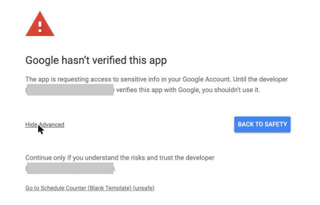
"Sign in to Schedule Counter." You may not see this one. If you do, check it shows your store account and click Continue.
The list of permissions. Tick Select all at the top, then click Continue. The tool can only send email. It can't read your inbox.
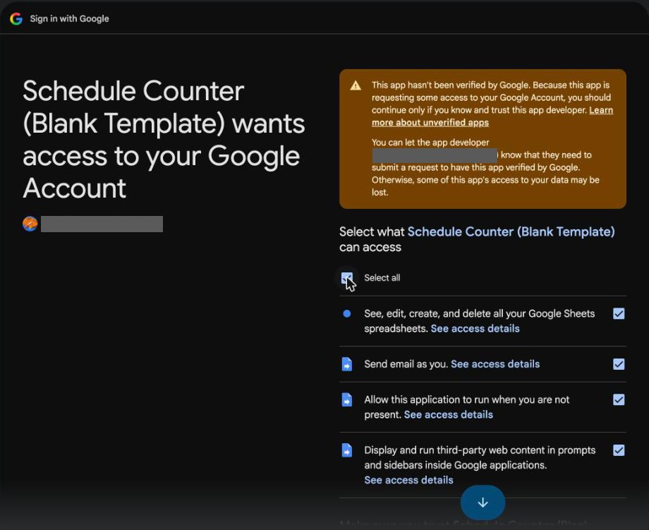
The sign-in tab closes and the setup carries on in your sheet by itself.
Step 4: Enter the alert email
- In the Schedule Counter Setup box, type the email that should hear about it if a weekly job fails or no sales data arrived.
- Click Save and build. In about 20 seconds it builds every tab and turns on three weekly jobs: a Sunday night sales check, Monday morning processing, and a Thursday schedule reminder.
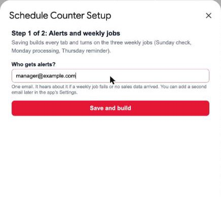
Step 5: Publish the app
This turns your sheet into the web page your managers use.
- In the menu bar, click Extensions → Apps Script. A new tab opens. Leave the code alone. If a "You're currently signed in as…" box pops up, check it's your store account and click OK.
- Click the blue Deploy button (top right), then New deployment.
- Check that it says Web app, that Execute as says Me, and that Who has access says Anyone. They're filled in already.
- Click Deploy. If Google asks again, click Authorize access and approve it the same way as Step 3.
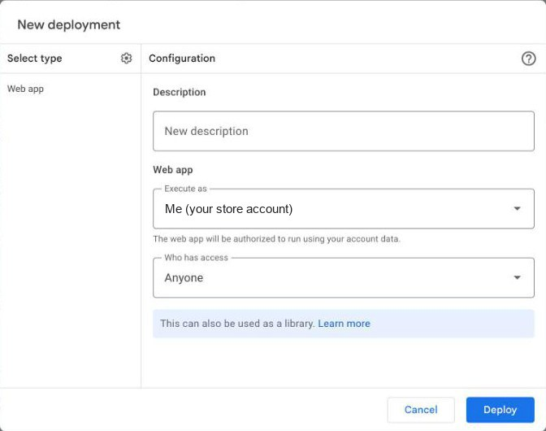
- Copy the Web app URL. That's your team's link. Bookmark it.
Anyone with the link can open the app, so share it with your managers only.
Step 6: Open the app and finish its setup
- Open your team's link. The first load takes 10–20 seconds.
- A Schedule Counter Setup welcome screen appears. Click Get Started.
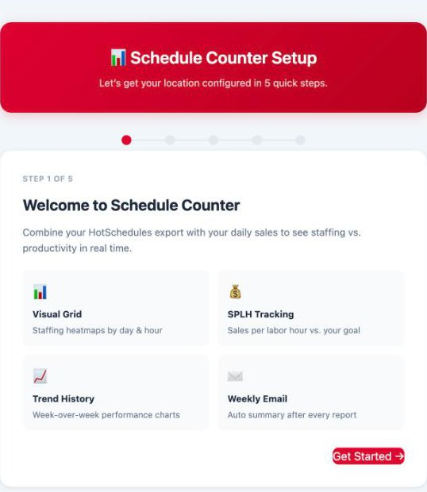
- Initialize Spreadsheet: click it. Your tabs already exist, so it just checks them.
- Location & Notifications: enter your store name and the email that should get the weekly labor summary. Click Save & Continue.
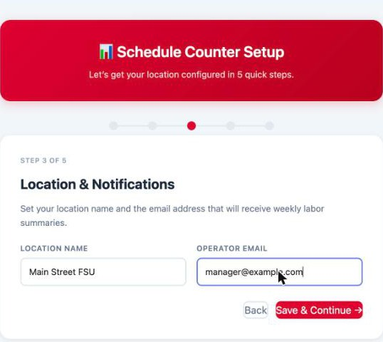
- Automated Triggers: click Install Triggers. They're already on from Step 4, so nothing gets doubled up.
- Sales Curves: click Accept Defaults & Launch.
Step 7: Connect your weekly sales
This is what makes the tool run itself. Once a week, CFA Analytics drops last week's hourly sales into the Sheet1 tab of your sheet, right before the tool's Sunday 10 PM check. You only set it up once.
Part A: Build the search. In CFA Home → Analytics Hub → Custom Reports → ThoughtSpot Search, open Sales Analytics and build a search with: - Sales, Hour (24 hr) and Business Date - the time filter this week - sort by Business Date and sort by Hour (24 hr) - a store filter for your restaurant by number, with all sales channels
Part B: Add the "Today date" formula. 1. In the column panel, click + Add → Formula.
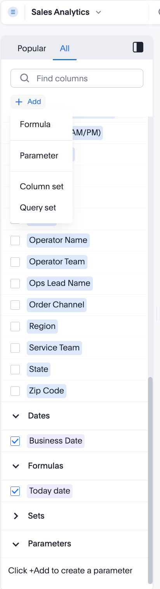
- Name it Today date, type today(), and click Save. It should say "Formula is ready to save".
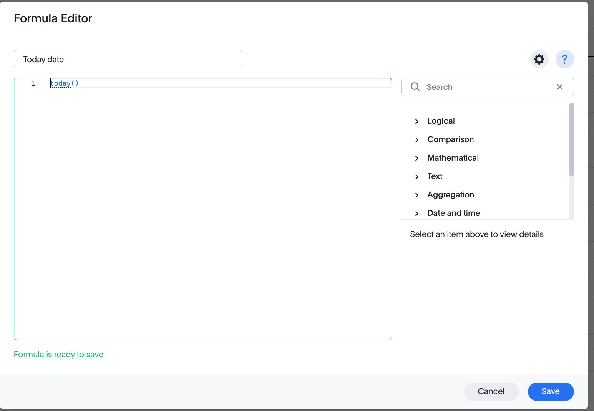
- Tick its box, along with Hour (24 hr), Business Date and Sales. Your search tokens across the top should look like this:
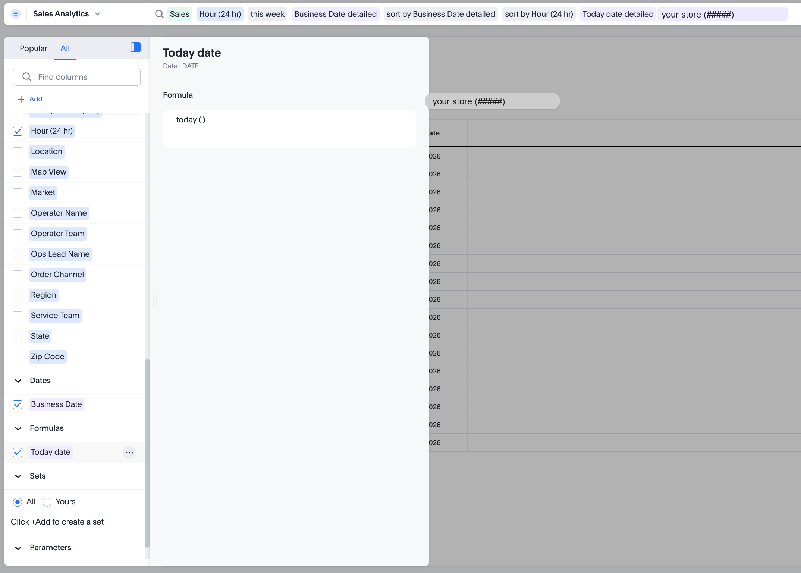
Part C: Set up the weekly sync. 1. Click the … menu → Sync → Sync to Sheets. Link your Google account the first time it asks, using your store account.
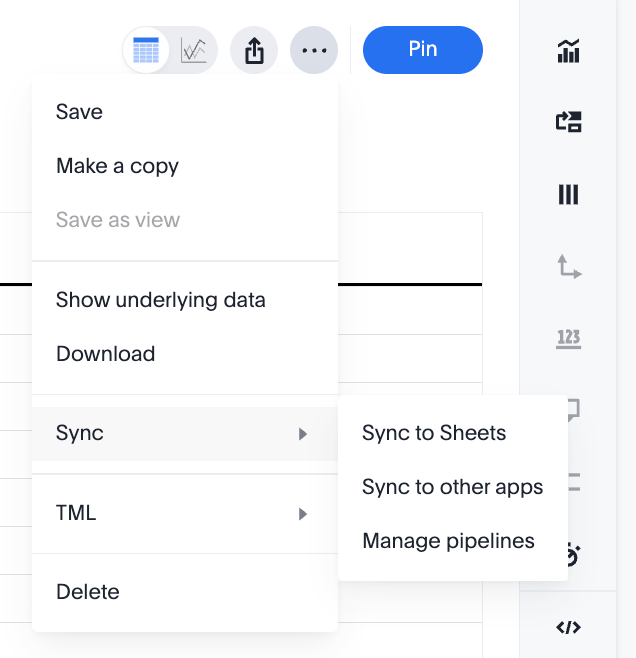
- In the pipeline editor, set: - File name: your Schedule Counter sheet from Step 1 - Sheet name: Sheet1 - Cell: A1 - Sync schedule: ticked, Week, 21:00, your time zone, SU (Sunday)
- Click Save.
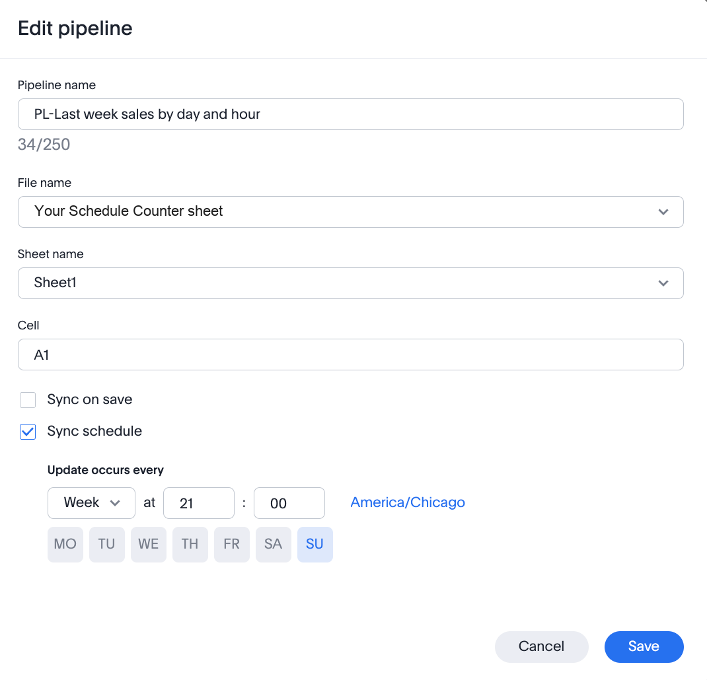
Timing matters. The sync has to land before the tool's Sunday 10 PM check. 9 PM Sunday gives an hour of cushion.
After the first sync, row 1 of Sheet1 reads: Hour (24 hr) · Business Date · Today date · Total Sales.
Step 8: Load your first week
Once sales are in Sheet1 (after the first Sunday sync):
- In the app, open Settings and scroll to the bottom, to Automation.
- Check that all three jobs say Active.
- Click Backfill History, then Rebuild Curves.
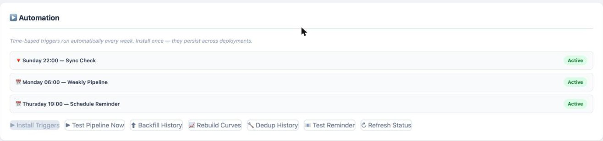
How to know it worked
- Settings → Automation shows three Active jobs.
- After Backfill History, a green message says how many rows it added.
- The Forecast tab shows next week's sales by day.
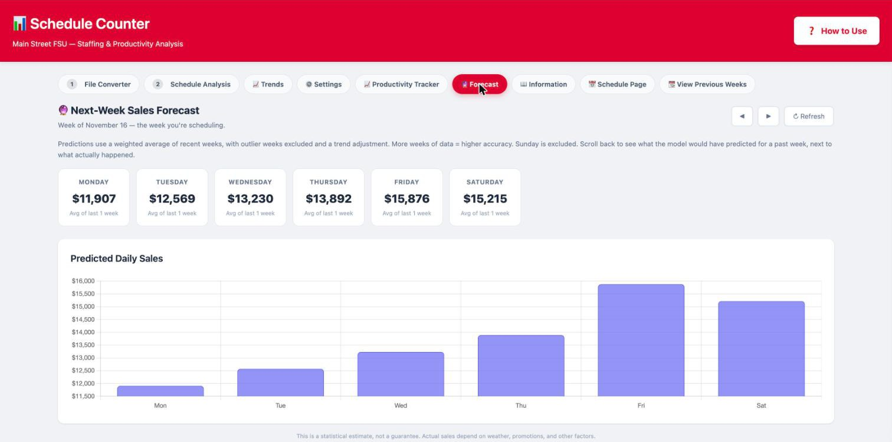
- On the File Converter tab, convert your HotSchedules export, then load it on Schedule Analysis. You get a staffing grid by day and hour.
If all four look right, you're live. From here it runs itself: every Monday morning it files last week's sales, updates the forecast, and clears Sheet1 for the next sync.
If something goes wrong
1. A Sunday email says the sales sync may have failed. - In ThoughtSpot, open … → Sync → Manage pipelines and check the pipeline ran. - Check Sheet1 has rows with last week's Business Date, and that row 1 has the four headers from Step 7.
2. "Sheet1 missing required columns." The search in Step 7 is missing a column. The tool needs headers containing Hour, Business Date and Total Sales.
3. Blank white page, or "Loading…" that never finishes. Wait 20 seconds and reload. If you changed anything in Apps Script, publish again with Deploy → Manage deployments → ✏️ → Version: New version → Deploy. The link stays the same.
4. The forecast never updates. Open Settings → Automation. If a job isn't Active, click Install Triggers. If you skipped Select all in Step 3, run 📊 Schedule Counter Setup → Start Setup again and tick Select all when asked.
5. The 📊 Schedule Counter Setup menu never appears. Reload twice. If it's still missing, make a fresh copy from Step 1. Once in a while Google copies the sheet without the tool attached.
Don't rename the Sheet1 tab, and don't edit the app_cache tab. You can delete the Start Here tab once setup is done.